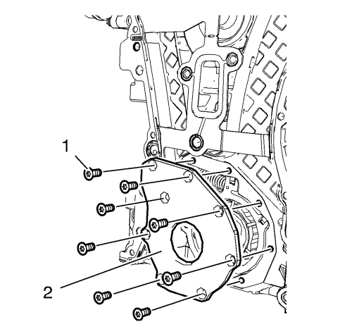

Sustitución de la bomba de aceite
Procedimiento de desmontaje
- Mida la presión de aceite y compárela con los valores especificados. Consulte Diagnóstico y comprobación de la presión de aceite → 1.4L LUH y LUJ.
- Retire la cubierta delantera del motor. Consultar Sustitución de la cubierta delantera del motor con la bomba de aceite .

- Retire los 8 tornillos de la tapa de la bomba de aceite (1).
- Retire la tapa de la bomba de aceite (2).

Advertencia: Antes de desmontar el muelle, tápelo con un trapo para evitar que salga expulsado y provoque daños materiales o personales.
Nota: Meta el destornillador entre el arrollamiento del muelle de la corredera de la bomba de aceite (2).
- Proteja el borde de la cubierta delantera del motor (1) con piezas de plástico adecuadas.
- Comprima el muelle de la corredera de la bomba de aceite con un destornillador y desmonte el muelle junto con el pasador.

Nota: Observe la posición de montaje de los componentes de la bomba de aceite.
- Desmonte los componentes de la bomba de aceite en el siguiente orden:
| 7.1. | Aro exterior del álabe de la bomba de aceite (1). |
| 7.2. | Rotor de álabes de la bomba de aceite (3) y 7 álabes (2). |
| 7.3. | Aro interior del álabe de la bomba de aceite (6). |
| 7.4. | Corredera de la bomba de aceite (4) y 2 juntas de corredera de bomba de aceite con 2 muelles de junta de corredera de bomba de aceite (5). |
Procedimiento de limpieza e inspección
- Compruebe si hay grietas, rayas o daños en la cubierta delantera del motor.
- Compruebe si la tapa de la bomba de aceite y la cubierta delantera del motor están lisas.
- Compruebe los álabes de la bomba de aceite, el rotor de los álabes de la bomba de aceite, los aros de los álabes y la corredera de la bomba de aceite por si hay puntos planos.
- Compruebe si el asiento del pasador del pivote de la corredera de la bomba de aceite es firme.
Advertencia: Utilice gafas de seguridad cuando emplee aire comprimido para evitar lesiones en los ojos.
Atención: Para garantizar que el motor está bien lubricado, limpie los conductos obstruidos o con aceite contaminado con un disolvente aprobado y aire comprimido. Si no se limpian los conductos de aceite, se puede dañar el motor.
- Limpie los conductos de aceite con disolvente y aire comprimido. Sople aire comprimido del orificio (2) al orificio (1).
Procedimiento de montaje

Nota: El pasador del muelle de la corredera de la bomba de aceite y el muelle de la corredera de la bomba de aceite, así como la junta de la corredera y el muelle de la junta de la corredera se pueden encargar como piezas sueltas. El resto de componentes de la bomba de aceite sólo se pueden encargar como un conjunto de repuesto.
- Monte los componentes del cárter de aceite en el siguiente orden:
| | Nota: El calibre (8) de la corredera de la bomba de aceite debe encajar con suavidad y sin que haya holgura respecto al pasador del pivote de la corredera de la bomba de aceite (7). |
| 1.1. | Monte la corredera de la bomba de aceite (6). |
| 1.2. | Monte el aro interior del álabe de la bomba de aceite (5). |
| | Nota: Observe la posición de montaje del rotor de álabes de la bomba de aceite (4). La marca (9) debe señalar hacia la tapa de la bomba de aceite. |
| 1.3. | Monte el rotor de álabes de la bomba de aceite (4). |
| | Nota: Tenga cuidado con los puntos planos (3) de los álabes de la bomba de aceite (2) provocados por los aros de los álabes de la bomba de aceite. Los puntos planos deben quedar hacia el lado del rotor de álabes de la bomba de aceite. |
| 1.4. | Monte los 7 álabes de la bomba de aceite (2). |
| 1.5. | Monte el aro exterior del álabe de la bomba de aceite (1). |
- Monte las 2 juntas de la corredera de la bomba de aceite y los 2 muelles de junta de la corredera de la bomba de aceite (2), en la posición indicada, en las 2 ranuras (1) de la corredera de la bomba de aceite.

- Proteja el borde de la cubierta delantera del motor (5) con piezas de plástico adecuadas.
Nota: El muelle de la corredera de la bomba de aceite (2) retirado debe tener una longitud de 76,5 mm (3,0118 pulg.) en el caso de los motores de absorción y de 61 mm (2,4016 pulg.) en el de los motores turbo.
- Monte el pasador del muelle de la corredera de la bomba de aceite (1) junto con el muelle de la corredera de la bomba de aceite (4). Utilice un destornillador para comprimir el muelle de la corredera de la bomba de aceite. El lado plano del pasador del muelle de la corredera de la bomba de aceite debe quedar hacia arriba.
- Lubrique con aceite de motor los álabes de la bomba de aceite, el rotor de los álabes de la bomba de aceite, el muelle de la corredera de la bomba de aceite y las cámaras (3).
- Compruebe si el mecanismo del muelle de la corredera de la bomba de aceite está bien.
- Mida las holguras axiales y radiales y compárelas con los valores especificados. Consultar Limpieza y revisión de la cubierta delantera del motor y de la bomba de aceite
- Monte la cubierta de la bomba de aceite (2) y los 8 tornillos de la cubierta de la bomba de aceite (1).
Precaución:Consulte Precaución con las fijaciones en la sección Prólogo.

- Apriete los tornillos de la bomba de aceite en el orden indicado a 8 N·m (71 lib. pulg.).
- Monte el dámper del cigüeñal (1) y gírelo en la dirección indicada (2) y en orden para comprobar el funcionamiento del mecanismo de la bomba de aceite. El dámper del cigüeñal debe girar con facilidad.
- Desmonte la cadena de distribución y sustituya la junta de la cubierta delantera del motor. Consultar Sustitución de la cadena de distribución del árbol de levas .
- Monte la cadena de distribución. Consultar Sustitución de la cadena de distribución del árbol de levas .
- Monte la tapa delantera del motor. Consultar Sustitución de la cubierta delantera del motor con la bomba de aceite .
- Mida la presión de aceite y compárela con los valores especificados. Consulte Diagnóstico y comprobación de la presión de aceite → 1.4L LUH y LUJ.
| © Copyright Chevrolet. All rights reserved |